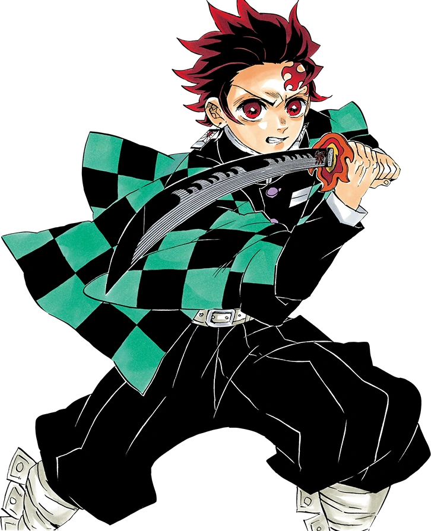
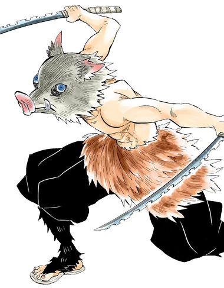
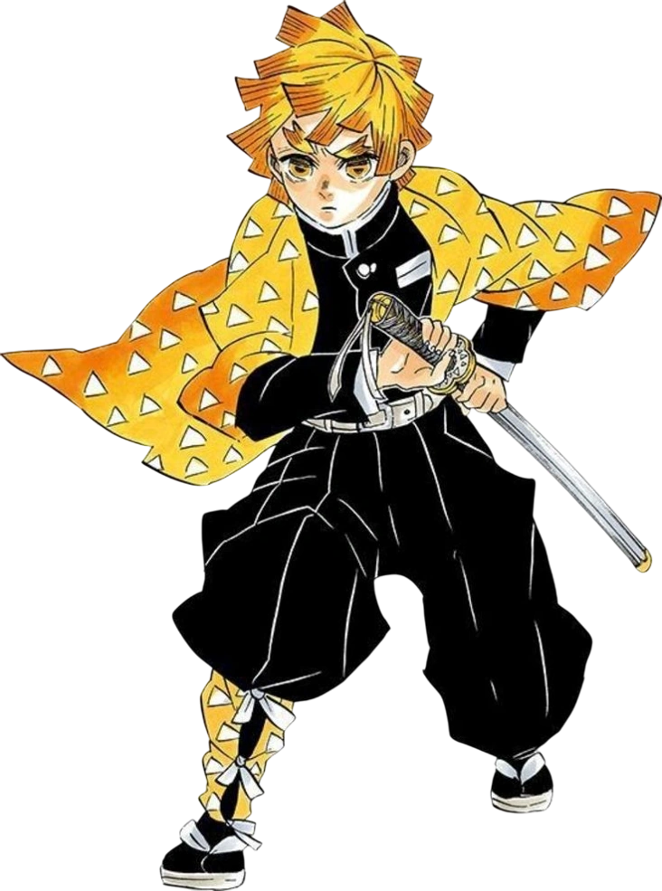

Kimetsu no Yaiba, também conhecido pelo título em língua inglesa Demon Slayer é uma série japonesa de mangá shōnen escrita e ilustrada por Koyoharu Gotōge. O mangá foi serializado de 15 de fevereiro de 2016


